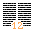

Die Werkzeugleiste des Hauptfensters ist konfigurierbar. Greifen Sie darauf durch den Eintrag Konfiguriere Werkzeugleiste... im Einstellungen Menü zu.

Jeder der Knöpfe hat einen Tooltip um Auskunft darüber zu geben was dessen Funktion ist. Knöpfe ohne Bildchen sollten entweder leer oder als unausgefüllt Leiste erscheinen.
 Schließt BibleTime.
Schließt BibleTime.
 Druckt die Einträge in der Druckschlange.
Druckt die Einträge in der Druckschlange.
 Zeige / Verstecke Strongs Nummern.
 Zeige / Verstecke Fußnoten.
Zeige / Verstecke Fußnoten.
 Suche in ausgewählten Modulen.
Suche in ausgewählten Modulen.
 Staple Anzeigefenster.
Staple Anzeigefenster.
 Staple Anzeigefenster automatisch.
Staple Anzeigefenster automatisch.
 Kachle Anzeigefenster.
Kachle Anzeigefenster.
 Kachle Anzeigefenster automatisch.
Kachle Anzeigefenster automatisch.
 Schließe alle Anzeigefenster.
Schließe alle Anzeigefenster.